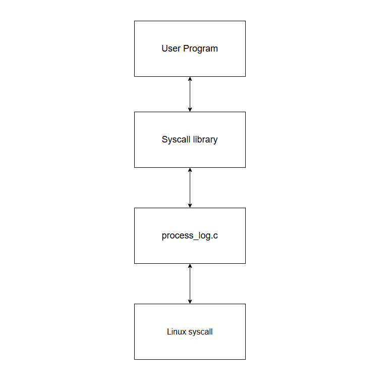
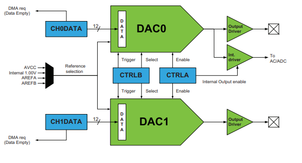
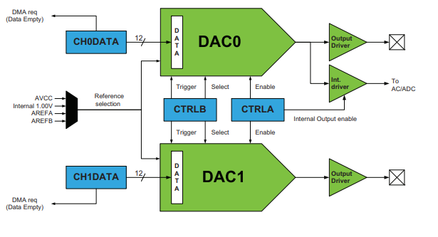
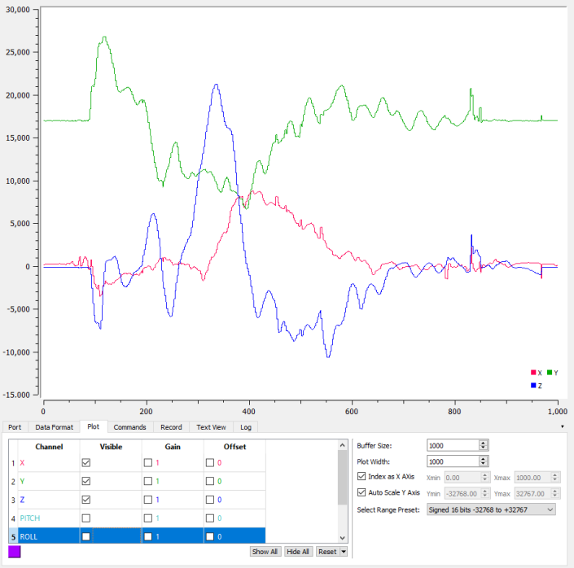

A System call allows a program to access resources via the operating system.
My specific system call library allows a user program to write to the diagnostic
messaging system in linux. Which is fancy for the process log.

My projects with C
Linux System Call Library
Keyboard Synthesizer
For this project, we were tasked with converting key presses
into an audible signal using our atmel ATXMEGA128A1U microcontroller and its
onboard DAC.
I had to use a sinewave table in order to convert the key presses into an audible signal for the digital to analog converter.
However, because interrupts were too slow, I had to use DMA in order to transfer the entire sinewave table into memory fast enough to play the sounds. 
I had to use a sinewave table in order to convert the key presses into an audible signal for the digital to analog converter.
However, because interrupts were too slow, I had to use DMA in order to transfer the entire sinewave table into memory fast enough to play the sounds. 
Accelerometer
For this task, I used SPI to communicate with an Accelerometer
using an ATXMEGA128A1U.
I then used serial plot in order to send the captured data over
USART to my pc.
